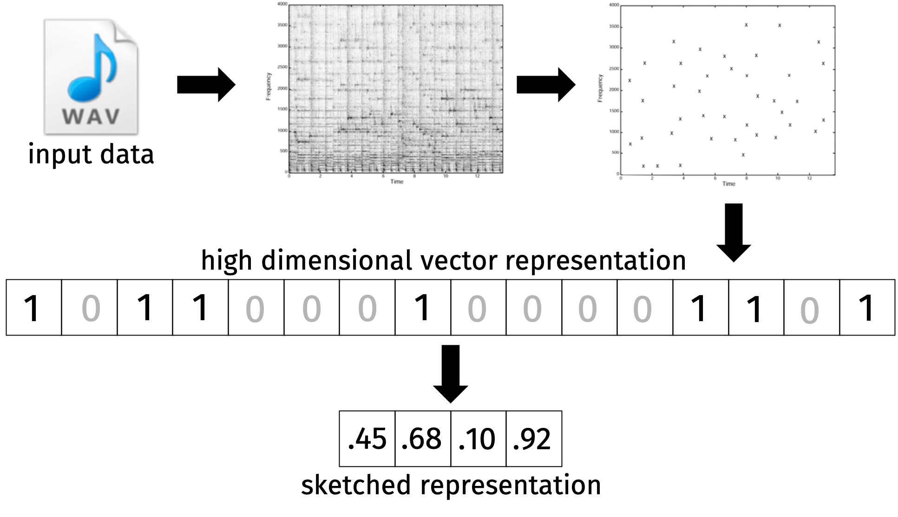
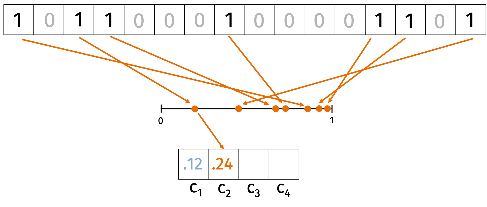
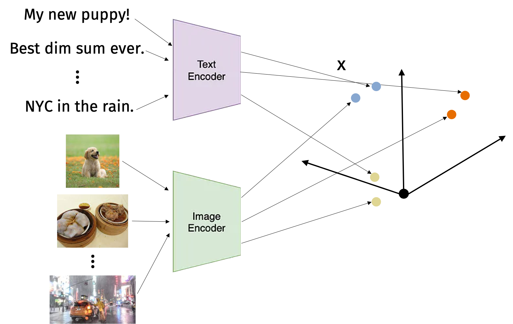
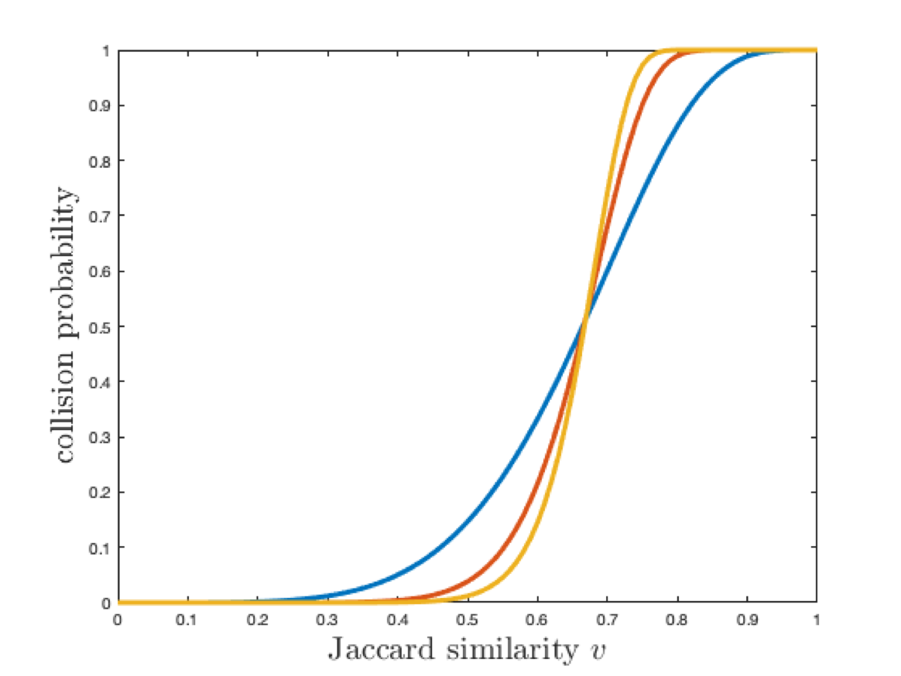
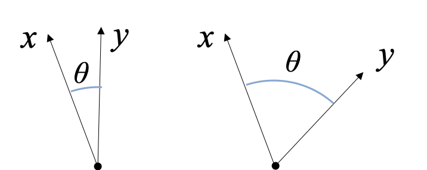
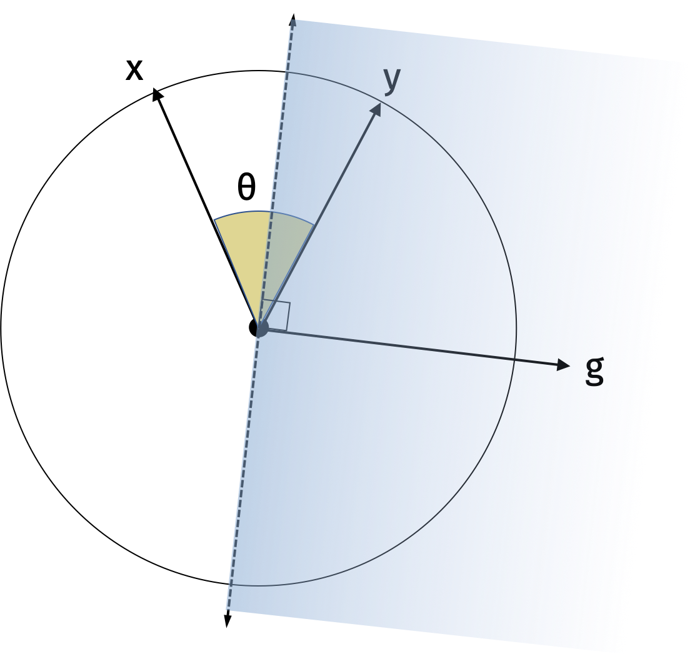
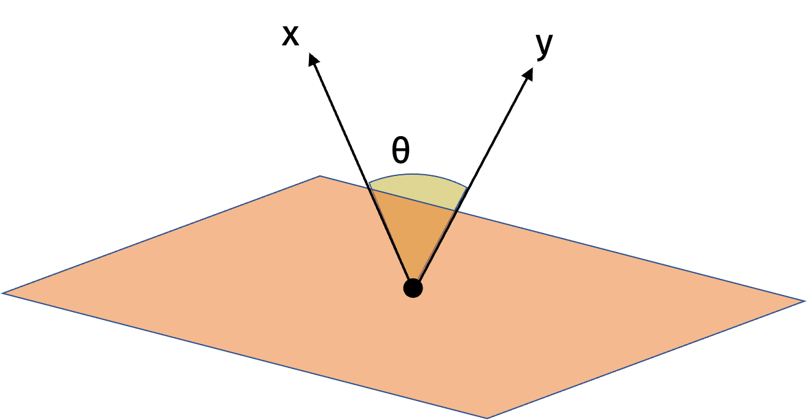
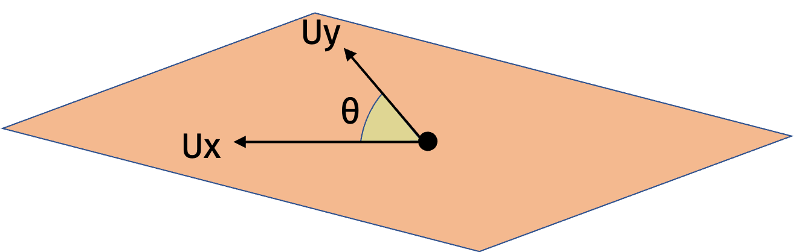

Similarity Estimation
We saw how, without additional structure, finding nearby points in \(d\) dimensions can require \(n=2^d\) data points. If we really had a data set that large, then the JL lemma would be vacuous since \(\log n = d\).
Today, we’ll see how additional structure can allow us to get much better dimensionality reduction results.
Similarity Estimation
Let’s consider the following problem: How do services like Shazam match a song clip against a library of more than 11 million songs in a fraction of a second? To make the problem more challenging, the song clips we match generally have additional noise like background sound in a car.
We know how Shazam does this because they published a white paper on their method. The key idea is to use a spectrogram to represent the song clip. A spectrogram is a 2D matrix where the rows correspond to frequencies and the columns correspond to time. We then convert the spectrogram to a fingerprint by taking the peaks in the spectrogram represented as a high-dimensional binary vector.

The process is a little more challenging because song clips may be slightly off set from the song clips in our database. In order to make the method work, they use anchor points to align the song clips. But, for our purposes, we are primarily interested in how we can compress the high-dimensional binary vector.
Once we have a fingerprint from a song clip, we want to search our database for similar songs. Formally, given a binary vector \(q \in \{0,1\}^d\) representing our song clip in \(d\) dimensions, we want to find a nearby fingerprint \(\mathbf{y} \in \{0,1\}^d\) in our database. The first challenge is that our database is possibly huge with \(O(nd)\) bits where \(n\) is the number of song clips. The second challenge is that it is expensive to compute the distance between \(\mathbf{y}\) and \(\mathbf{x}\) with runtime \(O(d)\).
In light of these challenges, our goal is to design a more compact sketch for comparing \(\mathbf{x}\) and \(\mathbf{y}\). We ideally want to use \(k \ll d\) space and time complexity. We will compute a compression \(C(\mathbf{x})\) and \(C(\mathbf{y})\) of \(\mathbf{x}\) and \(\mathbf{y}\), respectively. As in the JL compressions, we want \(C(\mathbf{x})\) and \(C(\mathbf{y})\) to be close when \(\mathbf{x}\) and \(\mathbf{y}\) are similar and far otherwise.
We will use the notion of Jaccard similarity to measure the similarity between \(\mathbf{x}\) and \(\mathbf{y}\).
Jaccard Similary: The Jaccard similarity between \(\mathbf{x}\) and \(\mathbf{y}\) is \[\begin{align*} J(\mathbf{x}, \mathbf{y}) = \frac{|\mathbf{x} \cap \mathbf{y}|}{|\mathbf{x} \cup \mathbf{y}|} = \frac{\textrm{# non-zero entries in common}}{\textrm{# non-zero entries in total}}. \end{align*}\]
Jaccard similarity can be applied to any data which has a natural binary representation:
We can use the “bag-of-words” model to represent a document as a binary vector where each entry is 1 if the word is in the document and 0 otherwise. Then the Jaccard similarity is the fraction of words in common between the two documents.
We can extract features from earthquake data for early detection. The approach is described in this paper.
We can compare cached web pages to determine if they are similar and avoid downloading the same content multiple times.
MinHash Algorithm
We’ll use the MinHash algorithm to build the compression function \(c:\{0,1\}^d \rightarrow \mathbb{R}^k\).
Consider an input \(\mathbf{x} \in \{0,1\}^d\). We start by choosing \(k\) random hash functions \(h_i: \{0, \ldots, d\} \rightarrow [0,1]\) for \(i \in [k]\). For each hash function \(h_i\) we’ll compute \[\begin{align*} c_i = \min_{j \in \{1, \ldots, d\}: \mathbf{x}_j = 1} h_i(j). \end{align*}\] In words, we hash each index where \(\mathbf{x}\) is non-zero to a random value in \([0,1]\). Then we take the minimum value of the hash function over all the non-zero indices. We call the compression \(C(\mathbf{x}) = (c_1, \ldots, c_k)\). We can see this process represented in the figure below.

We’ll argue that for all \(i\), \[\begin{align*} \Pr \left( c_i(\mathbf{x}) = c_i(\mathbf{y}) \right) = J(\mathbf{x}, \mathbf{y}) = \frac{|\mathbf{x} \cap \mathbf{y}|}{|\mathbf{x} \cup \mathbf{y}|}. \end{align*}\]
Every non-zero index in \(\mathbf{x} \cup \mathbf{y}\) is equally likely to produce the lowest hash value. We have \(c_i(\mathbf{x}) = c_j(\mathbf{x})\) if and only if the index hashed to the lowest value is 1 in both \(\mathbf{x}\) and \(\mathbf{y}\). Since there are \(|\mathbf{x} \cap \mathbf{y}|\) such indices, the probability that \(c_i(\mathbf{x}) = c_j(\mathbf{x})\) is the Jaccard similarity.
Inspired by this observation, the MinHash algorithm returns an estimate for the Jaccard similarity between \(\mathbf{x}\) and \(\mathbf{y}\): \[\begin{align*} \tilde{J}(\mathbf{x}, \mathbf{y}) = \frac1{k} \sum_{i=1}^k \mathbb{1}[c_i(\mathbf{x}) = c_i(\mathbf{y})]. \end{align*}\] By linearity of expectation, we have \[\begin{align*} \mathbb{E}[\tilde{J}(\mathbf{x}, \mathbf{y})] = \frac1{k} \sum_{i=1}^k \Pr( c_i(\mathbf{x}) = c_i(\mathbf{y})) = J(\mathbf{x}, \mathbf{y}). \end{align*}\] We can reduce the variance of the estimator by increasig the number of hash functions \(k\). The variance of the estimator is \[\begin{align*} \textrm{Var}( \tilde{J}(\mathbf{x}, \mathbf{y}) ) &= \frac1{k^2} \sum_{i=1}^k \textrm{Var}( \mathbb{1}[c_i(\mathbf{x}) = c_i(\mathbf{y})] ) \\ &= \frac1{k^2} \sum_{i=1}^k J(\mathbf{x}, \mathbf{y}) - J(\mathbf{x}, \mathbf{y})^2 \leq \frac1{k} J(\mathbf{x}, \mathbf{y}) \leq \frac1{k}. \end{align*}\]
How big should we choose \(k\) so that the the estimate is with an additive error \(\epsilon\) of its expectation with probability \(1-\delta\)?
Chebyshev’s inequality tells us that \[\begin{align*} \Pr\left( | J(\mathbf{x}, \mathbf{y}) - \tilde{J}(\mathbf{x}, \mathbf{y}) | \geq \alpha \frac{1}{\sqrt{k}}\right) \leq \frac1{\alpha^2} = \delta \end{align*}\]
The additive error is \(\epsilon= \alpha \frac{1}{\sqrt{k}}\). Since \(\alpha = 1/\sqrt{\delta}\), we have \(k = \frac1{\epsilon^2 \delta}\).
We have shown that as long as \(k=O(\frac1{\epsilon^2 \delta})\), then with probability \(1-\delta\), \[\begin{align*} J(\mathbf{x}, \mathbf{y}) - \epsilon \leq \tilde{J} (\mathbf{x}, \mathbf{y}) \leq J(\mathbf{x}, \mathbf{y}) + \epsilon. \end{align*}\] Notice that we only need \(O(k)\) time to compute the estimate which is independent of the original fingerprint dimension \(d\).
We can improve the result to have a \(\log(1/\delta)\) dependence using a Chernoff bound or the biased coin bound we showed in the concentration inequalities lecture.
Biased Coin Bound: Let the probability that a coin lands heads be \(b\). Choose \(k \geq \frac{3\log(2/\delta)}{\epsilon^2}\). If we flip a biased coin \(k\) times, let \(S\) be the number of heads. Notice that \(\mu = bk\). Then \[ \Pr(| S - b k | \geq \epsilon k) \leq \delta. \]
Think of the indicator random variables \(\mathbb{1}[c_i(\mathbf{x}) = c_i(\mathbf{y})]\) as coin flips. The probability the coin lands “heads” is \(J(\mathbf{x}, \mathbf{y})\). Then we can apply the biased coin bound after dividing by \(k\). With probability \(1-\delta\), the number of “heads” is within \(\epsilon\) of \(J(\mathbf{x}, \mathbf{y})\) if we set \(k=O(\frac{\log(1/\delta)}{\epsilon^2})\).
Near Neighbor Search
Our prior goal was to preserve distances between points. But the real reason we care about preserving distances is to find nearby points. In this section, we’ll focus on the near neighbor search problem. We want to find vectors in a database \(\mathbf{y}_1, \ldots, \mathbf{y}_n \in \mathbb{R}^d\) that are close to an input query vector \(\mathbf{x} \in \mathbb{R}^d\).
We showed before how to improve the runtime of linear scans from \(O(nd)\) to \(O(nk)\) and the space complexity from \(O(nd)\) to \(O(nk)\). This can be helpful but we want to go even further to an algorithm which finds nearby vectors with runtime sublinear in \(n\).
To see convince yourself it is possible to find nearest neighbors in sublinear time, consider the problem in one dimension. We know how to solve this problem in \(\log_2 n\) time using binary search. We can generalize this approach to higher dimensions with data structures like k-d trees. Unfortunately, the runtime is roughly \(O(d \min(n, 2^d))\) which is sublinear only for \(d=o(\log n)\).
High-dimensional vector search is exploding as a research area because of machine-learning multi-model embeddings for images, text, and more. For example, models like CLIP allow us to embed images and text into a common space. Then we can search for images that are similar to a text query or vice versa.

There are many approaches to nearest neighbor search including spectral hashing and vector quantization. Today, we’ll focus on locality sensitive hashing (LSH). The key insight of LSH is to trade worse space complexity for better time complexity. So we’ll use \(O(n)\) space or more but we’ll get sublinear time complexity.
Locality Sensitive Hashing
Let \(h: \mathbb{R}^d \rightarrow \{1, \ldots, m\}\) be a random hash function. Consider a similarity function \(s\) such as the Jaccard similarity. We call \(h\) locally sensitive if \(\Pr(h(\mathbf{x}) = h(\mathbf{y}))\) is high when \(\mathbf{x}\) and \(\mathbf{y}\) are similar and low when \(\mathbf{x}\) and \(\mathbf{y}\) are dissimilar.
We will now take a first stab at designing the LSH scheme. Let \(c: \{0,1\}^d \rightarrow [0,1]\) be a single instantiation of MinHash. Let \(g: [0,1] \rightarrow \{1, \ldots, m\}\) be a uniform random hash function. Then we’ll define the locally sensitive hash function \(h(\mathbf{x}) = g(c(\mathbf{x}))\).
Observe that \(h(\mathbf{x}) = h(\mathbf{y})\) when \(c(\mathbf{x}) = c(\mathbf{y})\) or when \(\mathbf{x}\) and \(\mathbf{y}\) happen to randomly be mapped to the same output. In mathematical notation, we have \[\begin{align*} \Pr(h(\mathbf{x}) = h(\mathbf{y})) &= \Pr(c(\mathbf{x}) = c(\mathbf{y})) + \left( 1- \Pr(c(\mathbf{x})) = c(\mathbf{y})) \right) \frac1{m} \\ &\leq J(\mathbf{x}, \mathbf{y}) + \frac1{m}. \end{align*}\]
The basic approach for near neighbor search in a database has two steps. In the preprocessing step, we select a random LSH hash function \(h: \{0,1\}^d \rightarrow \{1,\ldots, m\}\). We create a table with \(m=O(n)\) slots. For each vector \(\mathbf{y}_i\) with \(i \in [n]\), we compute \(h(\mathbf{y}_i)\) and store \(\mathbf{y}_i\) in the corresponding slot in the table.
In the query step, we want to find near neighbors of \(\mathbf{x}\). We compute \(h(\mathbf{x})\) and look in the corresponding slot of the table. We then scan through all the vectors in the slot and compute the distance to \(\mathbf{x}\). The time required is now the time to compute the distance between the query vector and each vector in the slot.
There are two main considerations that we want to analyze. The first is the false negative rate: What’s the probability we do not find a vector that is close to \(\mathbf{x}\)? The second is the false positive rate: What’s the probability that a vector in the slot is not close to \(\mathbf{x}\)?
A higher false negative rate means we may miss a vector that is close to \(\mathbf{x}\). A higher false positive rate means we increase the runtime of the query step because we have to scan through more vectors in the slot. Note that the meaning of “close” and “not close” is application dependent. For example, we may want to find anything with Jaccard similarity at least \(.4\) but we may not want to compare against anything with similarity less than \(.2\).
We can reduce the false negative rate by using multiple hash functions. In the preprocessing step, we now select \(t\) independent LSH hash functions \(h_1, \ldots, h_t\). We create tables \(T_1, \ldots, T_t\) each with \(m\) slots. For every vector \(i \in [n]\) and every table \(j\) , we compute \(h_1(\mathbf{y}_i), \ldots, h_t(\mathbf{y}_i)\) and store \(\mathbf{y}_i\) in the corresponding slots in \(T_1, \ldots, T_t\). In the query step we compute \(h_1(\mathbf{x}), \ldots, h_t(\mathbf{x})\) and look in each one of the corresponding slots in \(T_1, \ldots, T_t\).
We can now analyze the probability that we find a nearby vector \(\mathbf{y}\) that has Jaccard similarity at least \(.4\). The probability that we find \(\mathbf{y}\) is \[\begin{align*} 1 - \Pr(h_1(\mathbf{x}) \neq h_1(\mathbf{y})) \cdots \Pr(h_t(\mathbf{x}) \neq h_t(\mathbf{y})) = 1-(1-J(\mathbf{x}, \mathbf{y}))^t. \end{align*}\] If the Jaccard similarity is \(.4\) and \(t=10\), then the probability that we find \(\mathbf{y}\) is \(1-(1-.4)^t \approx .99\). But now we have a new problem which is that we may find many false positives. If the Jaccard similarity is \(.2\) and \(t=10\), then the probability that we find \(\mathbf{y}\) is \(1-(1-.2)^t \approx .89\). Now that we reduced the false negative rate, we need to find a way to reduce the false positive rate.
We can reduce the false positive rate by modifying our LSH scheme one more time. Choose a positive integer \(r\). Let \(c_1, \ldots, c_r: \{0,1\}^d \rightarrow[0,1]\) be independent instantiations of MinHash. Let \(g:[0,1]^r \rightarrow \{1,\ldots,m\}\) be a uniform random hash function. Then define the LSH hash function is \(h(\mathbf{x}) = g(c_1(\mathbf{x}), \ldots, c_r(\mathbf{x}))\). We refer to \(r\) as the number of bands. Now the probability that \(\mathbf{x}\) and \(\mathbf{y}\) are in the same slot in a particular table is \[\begin{align*} \Pr(h(\mathbf{x}) = h(\mathbf{y})) = J(\mathbf{x}, \mathbf{y})^r + (1-J(\mathbf{x}, \mathbf{y})^r) \frac1{m} \end{align*}\]
The full LSH scheme now has two parameters: \(r\) the number of bands and \(t\) the number of tables. Changing \(r\) and \(t\) changes the false positive and false negative rates. If we increase the number of tables \(t\), we decrease the false negative rate and increase the false positive rate. If we decrease the number of bands \(r\), we increase the false negative rate and decrease the false positive rate.
Intuitively, these parameters are in tension but we can find a sweet spot that works well for each application.

Increasing both \(r\) and \(t\) gives a steep curve which is better for search but worse for space complexity.
SimHash
We just showed how the MinHash algorithm gives a good LSH scheme for Jaccard similarity. There are also LSH schemes for other similarity functions. We’ll now show how to design a LSH scheme for cosine similarity.
Cosine similarity is a measure of similarity between two vectors \(\mathbf{x}\) and \(\mathbf{y}\). Formally, \[\begin{align*} \cos(\theta(\mathbf{x}, \mathbf{y})) = \frac{\langle \mathbf{x}, \mathbf{y} \rangle}{\|\mathbf{x}\|_2 \|\mathbf{y}\|_2}. \end{align*}\]

We can think of cosine similarity as a natural “inverse” for Euclidean distance. Suppose \(\mathbf{x}\) and \(\mathbf{y}\) are unit vectors. Then we have \[\begin{align*} \| \mathbf{x} - \mathbf{y} \|_2^2 &= \langle \mathbf{x} - \mathbf{y}, \mathbf{x} - \mathbf{y} \rangle \\ &= \| \mathbf{x} \|_2^2 + \| \mathbf{y} \|_2^2 - 2 \langle \mathbf{x}, \mathbf{y} \rangle = 2 - 2 \cos(\theta(\mathbf{x}, \mathbf{y})). \end{align*}\]
Let’s design a LSH scheme for cosine similarity with \(r\) bands. Let \(\mathbf{g}_1, \ldots, \mathbf{g}_r \in \mathbb{R}^d\) be random vectors with each entry drawn from the standard normal distribution \(\mathcal{N}(0,1)\). Let \(f: \{-1, 1\}^r \to \{1, \ldots, m\}\) be a uniform random hash function. Then we define the LSH hash function \(h: \mathbb{R}^d \to \{1, \ldots, m\}\) as \[\begin{align*} h(\mathbf{x}) = f([\textrm{sign}(\langle \mathbf{g}_1, \mathbf{x} \rangle), \ldots,\textrm{sign}(\langle \mathbf{g}_r, \mathbf{x} \rangle) ]). \end{align*}\]
Let \(\theta = \theta(\mathbf{x}, \mathbf{y})\). We will show that \[\begin{align*} \Pr( h(\mathbf{x}) = h(\mathbf{y}) ) = (1 - \frac{\theta}{\pi})^r + \frac{1}{m}. \end{align*}\]
As an intermediate result, we will show that \[\begin{align*} \Pr( \langle \mathbf{g}, \mathbf{x} \rangle = \langle \mathbf{g}, \mathbf{y} \rangle ) = 1 - \frac{\theta}{\pi}. \end{align*}\]
We will first show the result in one dimension. Consider the random vector \(\mathbf{g}\) and its hyperplane. Since it is drawn from the standard normal distribution, the direction of \(\mathbf{g}\) is uniformly distributed around the unit circle. Similarly, the hyperplane is also uniformly distributed around the unit circle. The sign of the inner product \(\langle \mathbf{g}, \mathbf{x} \rangle\) specifies which side of the hyperplane \(\mathbf{x}\) is on. Intuitively, the probability that \(\mathbf{x}\) and \(\mathbf{y}\) are on the same side of the hyperplane is proportional to their angle. We can make this formal with the following visualization.

The probability that they lie on different sides of the hyperplane is the probability that the random hyperplane falls between \(\mathbf{x}\) and \(\mathbf{y}\) which is \(\frac{2\theta}{2\pi}\). Then the probability that they lie on the same side of the hyperplane is \(1-\frac{\theta}{\pi}\).
In higher dimensions, we can use the same intuition. There is always some rotation matrix \(\mathbf{U}\) such that \(\mathbf{Ux}\) and \(\mathbf{Uy}\) are spanned by the first two standard basis vectors and have the same cosine similarity as \(\mathbf{x}\) and \(\mathbf{y}\). Then we can apply the result in one dimension to \(\mathbf{Ux}\) and \(\mathbf{Uy}\).
 
We have shown how to design LSH schemes that perform well in expectation. But we are also interested in the worst case performance. Such guarantees can be proven and were actually a major driving force in the development of LSH schemes.
Theorem (Indyk and Motwani 1998): If there exists some vector \(\mathbf{y}\) with \(\|\mathbf{x} - \mathbf{y}\|_0 \leq R\), then we can return a vector \(\hat{\mathbf{y}}\) with \(\|\mathbf{x} - \hat{\mathbf{y}}\|_0 \leq C \cdot R\) in \(O(n^{1/C})\) time and \(O(n^{1+1/C})\) space.